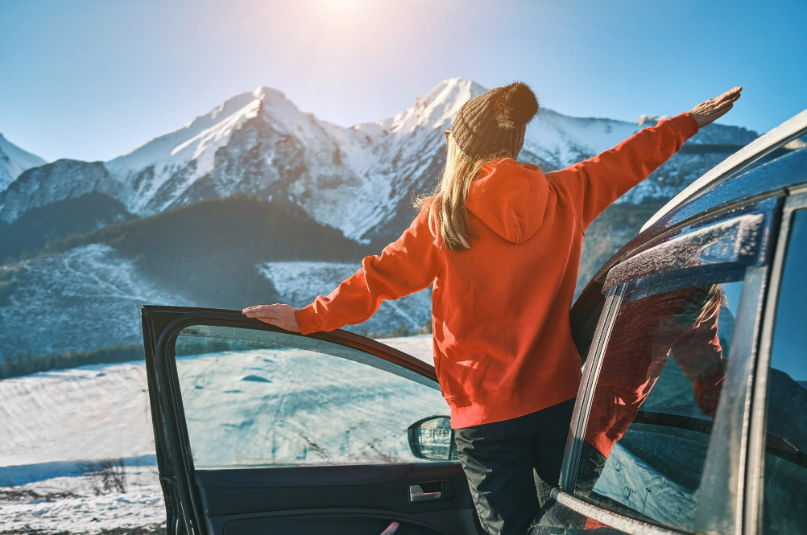
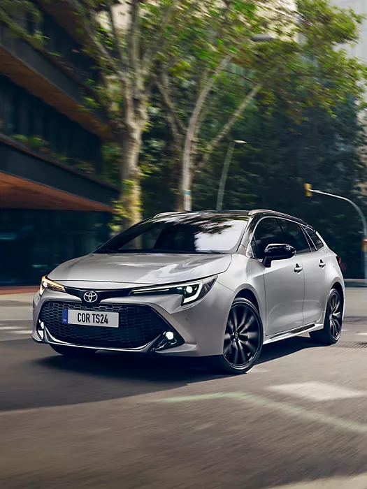
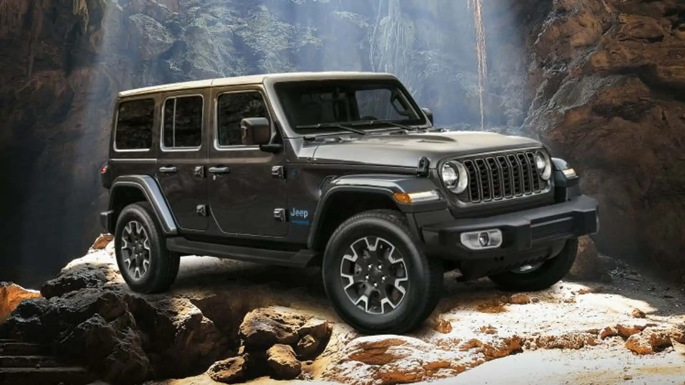

Cele mai bune 10 autoturisme de închiriat pentru excursiile cu mașina
Călătoriile cu mașina se pot dovedi adevărate aventuri. Ele oferă libertatea de a explora destinații noi, emoția de a crea amintiri de neuitat și bucuria de a porni într-o aventură cu cei dragi. O parte importantă a unei excursii de succes este mașina pe care alegi să o conduci. Mașina potrivită poate transforma o excursie bună într-una grozavă. Indiferent dacă planifici să închiriezi un SUV pentru a vizita parcurile naționale, un decapotabil pentru o plimbare însorită în Los Angeles sau un monovolum pentru a duce familia într-o excursie epică prin țară, te acoperim cu o listă a celor mai bune mașini pentru următoarea ta excursie rutieră.
Importanța alegerii mașinii potrivite pentru o excursie

Alegerea mașinii potrivite pentru excursia ta rutieră asigură o călătorie confortabilă, sigură și plăcută. Cu siguranță nu vrei să ajungi înghesuit, incomod sau să te confrunți cu probleme neașteptate. Când alegi o mașină pentru excursia ta rutieră, ia în considerare următoarele aspecte:
Cele mai bune mașini de închiriat
Fiecare are punctele sale forte unice, fie că cauți eficiență a consumului de combustibil, confort, fiabilitate sau un strop de lux.
Toyota Corolla — cea mai bună pentru fiabilitate
Toyota Corolla este o alegere de top pentru excursioniștii care caută o mașină de închiriat fiabilă și eficientă din punct de vedere al consumului de combustibil. Acest sedan compact oferă un amestec perfect de practicitate și economie pentru călătoria ta. Cu o eficiență impresionantă a consumului de combustibil (35 până la 52 mpg pe autostradă), poți călători pe distanțe lungi fără opriri frecvente la benzinărie. În ciuda dimensiunilor sale compacte, Corolla are un interior spațios care oferă spațiu amplu pentru picioare și confort atât pentru pasagerii din față, cât și cei din spate.
Honda CR-V — cea mai bună pentru grupuri mici cu mult bagaj
Honda CR-V este o alegere fantastică pentru excursioniștii care caută o plimbare versatilă și confortabilă. Acest SUV compact oferă spațiu amplu pentru bagaje (cu o deschidere joasă și largă a portbagajului), făcându-l ideal pentru grupuri mici sau familii cu multe bagaje sau echipamente. În interiorul cabinei, CR-V permite tuturor pasagerilor să se întindă și să se relaxeze în timpul călătoriei. În plus, CR-V oferă o calitate lină a călătoriei, zgomot minim de drum și eficiență bună a consumului de combustibil (32 până la 36 mpg pe autostradă).
Subaru Outback — cea mai bună pentru următoarea ta aventură off-road
Subaru Outback este grozav dacă cauți aventuri off-road sau libertatea de a explora terenuri accidentate. Cu tracțiunea integrală standard, Outback oferă tracțiune și stabilitate excepționale pentru a naviga cu încredere pe drumuri înzăpezite, trasee stâncoase sau condiții dificile de off-road. Indiferent dacă pleci într-o plimbare pitorească prin munți, explorezi zone sălbatice îndepărtate sau te aventurezi în parcuri naționale, Subaru Outback este conceput pentru a face față tuturor.
Jeep Wrangler — cel mai bun pentru pasionații de aer liber
Când vine vorba de aventuri off-road, Jeep Wrangler este alegerea supremă pentru închiriere. Designul său robust și emblematic și capacitățile sale legendare de tracțiune integrală îți permit să cucerești orice teren cu încredere. Una dintre caracteristicile unice ale Jeep Wrangler este acoperișul și ușile ce își permit să te bucuri de priveliștile, sunetele și miresmele naturii înconjurătoare. Imaginează-ți că te plimbi pe drumuri pitorești de coastă cu vântul în păr sau că privești stelele căzătoare din confortul cabinei Jeep-ului tău.
Ford Mustang — cel mai bun pentru o plimbare elegantă și sportivă
Dă startul excursiei tale rutiere cu emblematicul Ford Mustang. Această mașină sportivă și puternică oferă o experiență de conducere captivantă care va face călătoria ta de neuitat. Cu designul său elegant, prezența impunătoare și performanțele impresionante, Ford Mustang sigur va întoarce privirile în timp ce te plimbi pe autostradă. Motorul puternic al Mustang-ului oferă o plimbare plină de adrenalină, în timp ce manevrarea receptivă și direcția precisă oferă o conexiune palpitantă cu drumul. Indiferent dacă explorezi drumuri montane șerpuitoare sau te bucuri de libertatea porțiunilor lungi de autostradă, Ford Mustang oferă un nivel inegalabil de emoție și performanță.
Dodge Charger — cel mai bun pentru o plimbare puternică și captivantă
Eliberează puterea și performanța Dodge Charger pentru o experiență de excursie rutieră de neuitat. Cu stilul său îndrăzneț și opțiunile impresionante de motor, Charger combină performanța cu confortul. Gama sa de motoare puternice (inclusiv opțiuni V6 și V8) oferă accelerare captivantă și manevrabilitate receptivă, făcând fiecare călătorie captivantă.
Chevrolet Camaro — cel mai bun pentru a atrage privirile
Din momentul în care pornești pe drum, motorul puternic al Camaro oferă accelerare captivantă și performanță receptivă. În interiorul Camaro, vei găsi o cabină bine construită și confortabilă care adaugă un strop de lux excursiei tale rutiere. Scaunele suportive și cabina orientată spre șofer creează o experiență de conducere imersivă. Deși Camaro nu oferă același nivel de practicitate și spațiu pentru bagaje ca alte opțiuni de închiriere, compensează prin stil și performanță.
Volkswagen Atlas — cel mai bun pentru grupuri mai mari
Volkswagen Atlas este perfect pentru cei care călătoresc cu un grup mai mare sau au nevoie de spațiu suplimentar pentru pasageri și bagaje. Cu trei rânduri de scaune și capacitate generoasă pentru bagaje, acest SUV spațios este o alegere excelentă pentru excursii rutiere în familie sau aventuri în grup. În interiorul Atlas, vei găsi o cabină care poate acomoda până la șapte pasageri. Spațiul amplu pentru picioare și scaunele suportive asigură o plimbare plăcută și confortabilă, chiar și în timpul porțiunilor lungi de drum.
Mazda CX-5 — cel mai bun pentru călătorii pe distanțe lungi
Eficiența consumului de combustibil este o caracteristică a Mazda CX-5 (27 până la 31 mpg pe autostradă), făcându-l o alegere economică pentru excursii rutiere. Motorul său eficient și tehnologia avansată Skyactiv ajută la maximizarea economiei de combustibil, permițându-ți să parcurgi distanțe lungi fără opriri frecvente la pompă. Acest lucru înseamnă mai mult timp pentru a te bucura de drumurile deschise și mai puține griji legate de costurile de combustibil. Cabina este gândită cu materiale de înaltă calitate și scaune ergonomice, oferind un mediu confortabil și primitor pe tot parcursul călătoriei. Indiferent dacă călătorești singur sau cu un partener, CX-5 oferă spațiu amplu pentru picioare și pentru bagaje pentru o plimbare plăcută.
Kia Telluride — cea mai bună pentru o plimbare luxoasă cu trei rânduri
Kia Telluride este o alegere excelentă pentru cei care doresc să închirieze o mașină luxoasă și spațioasă. Cu interiorul său rafinat și atenția la detalii, Telluride oferă o experiență de conducere premium care adaugă un strop de eleganță călătoriei tale. Acest SUV are trei rânduri de scaune, oferind spațiu amplu pentru pasageri și bagaje. Indiferent dacă călătorești cu familia sau prietenii, toată lumea poate să se întindă și să se bucure de călătorie. Spațiul generos pentru bagaje al Telluride asigură, de asemenea, că ai suficient loc pentru bagaje, echipamente și suveniruri.